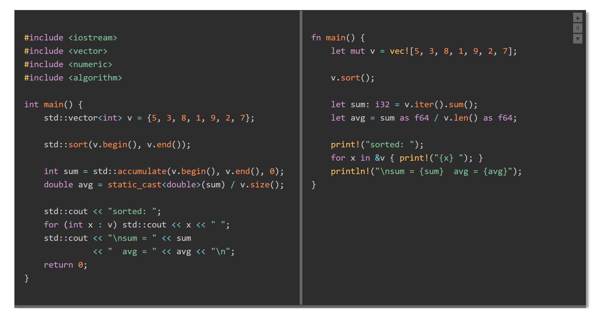

<view-comparator>) that displays two side-by-side panels
separated by a draggable splitter bar. Designed for comparing code or text across languages,
versions, or styles.
ViewComparatorComponent/
js/
ViewComparator.js component definition
css/
ViewComparator.css host-page placement helpers
ViewComparatorComponent.html demo / test page
SpecComparatorComponent.md detailed specification
README.md this file
<link rel="stylesheet" href="css/ViewComparator.css">
<script src="js/ViewComparator.js" defer></script>
<view-comparator width="60rem" height="20rem" left-ratio="0.5">
<pre slot="left">Left panel content.</pre>
<pre slot="right">Right panel content.</pre>
</view-comparator><link rel="stylesheet" href="../css/prism.css">
<script src="../js/prism.js" defer></script>
<script src="js/ViewComparator.js" defer></script>
<view-comparator width="70rem" height="24rem" highlight="prism" left-ratio="0.5">
<pre slot="left"><code class="language-cpp">// C++ code</code></pre>
<pre slot="right"><code class="language-rust">// Rust code</code></pre>
</view-comparator>| Attribute | Default | Description |
|---|---|---|
width | auto | Total component width (any CSS length) |
height | auto | Panel height |
left-ratio | 0.5 | Initial fraction of width given to the left panel |
bar-width | 6px | Width of the splitter bar |
bar-color | #888 | Color of the splitter bar |
bg-color | var(--light) | Background of both panels |
color | var(--dark) | Foreground (text) color of both panels |
overflow-x | auto | Horizontal overflow: auto, scroll, or hidden |
code-padding | 0.75rem 1rem | Padding inside each panel |
highlight | (none) | Set to prism to enable Prism.js highlighting |
step-px | 40 | Pixels transferred per panel-click width adjustment |
min-panel-px | 120 | Minimum width in pixels for either panel |
min-height-px | 80 | Minimum height in pixels |
offset-step-px | 40 | Pixels shifted per right-panel offset action |
step-px; click the right panel to grow it.| Action | Effect |
|---|---|
| Click ▼ button | Shift right content down by offset-step-px |
| Click ▲ button | Shift right content up by offset-step-px |
| Click 0 button | Reset offset to zero |
| Alt+↓ (right panel focused) | Same as ▼ |
| Alt+↑ (right panel focused) | Same as ▲ |
| Escape (right panel focused) | Same as 0 |
highlight="prism" is set.
Load prism.js and prism.css before the component script.